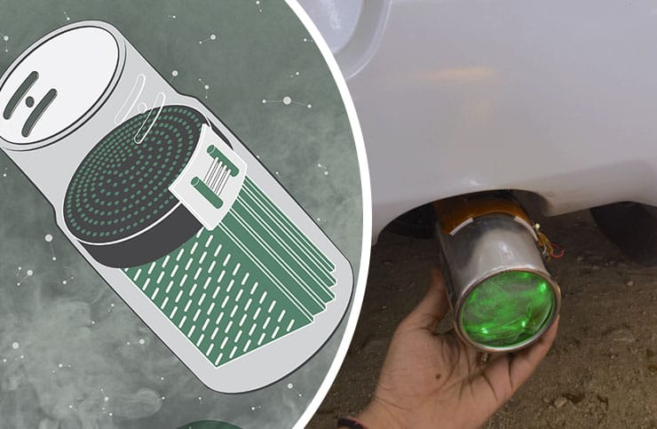
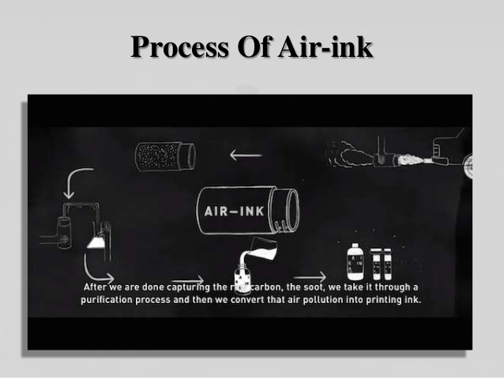
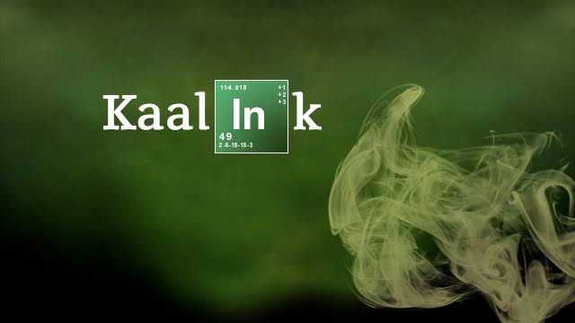

About Us
|
Welcome Everyone to our first newly initiative towards country's growing air pollution. As we know that our society is facing many problems under Tragedy Of Commons(TOC) i.e. common sharing things. For example - Air, Land, Water, etc. It is increasing at a very alarming rate and no-one can solve it by alone. It's one and only solution is we all. Wthout the help of each and every person of the country, no-one will eventually solve this problem not even our government. So I request you all to join our hands and gives your support to make it possible so that our present & upcoming generations will live a life without pollution.
|
|
|
|
This website is for the people who is having automobiles like car, bike, scooty and all environment pollutant gas emitter things like factory, buses, etc. We are here with a newly invent automobile part KAALINK which absorbs all the smoke, greenhouses gases and make automobile environment friendly without investing much cost.
|
About Product
Kaalink is a contraption retrofitted to the exhausted pipe of vehicles to capture the outgoing pollutants.
This does not affect the vehicle/engine performance.
Soot collected by kaalink undergoes various proprietary process to remove heavy metals and carcinogens. The end product is purified carbon based pigment.
In the final stage, the carbon is taken through another chemical process to make different types of inks and paints.
Every 45 minutes worth of car emissions - 30 ml of ink.
600 ml sprays holds the equivalent of 2000 hours of pollution.
It can also be mount over mouths of boats, chimneys and cranes.
It not only stops CO2 gas enter into air but also captures a dangerous carbon soot called PM 2.5(Particulate Matter 2.5(size of particle in microns)).
For more details please refer KAALINK WIKIPEDIA .



Buy Kaalink
Benefits for the automobile user:
1. With this cheap device you can contribute towards the green environment upto a great extent.
2. If your vehicle contains this device then you will get some discount also on you yearly vehicle insurance.
3. This motivate others for doing so also.
Terms And Conditions for buying the product:
1) Mention you name and address very carefully.
2) Since there is home delivery option you should mention your mobile number correctly for both our executive and your inconvenience.
3) Please pay the money through suitable options like credit card, debit card, net banking or government approved API wallets.
4) Delivery will be made within 7 working days.
5) In case of any delivery related queries please contact us through suitable media. We will try to sort out all your queries as early as possible.
I hope you are a well aware citizen of the country and excited to buy Kaalink for your domestic vehicle.
For making your vehicle environment friendly please proceed to the following link ---
Buy Kaalink
Refill
Benefits of refilling the device:
1. Refilling keeps your device long lasting.
2. No worry for refiiling. Door step services by our executives.
3. Refilling provides you the money which will be giving by us.
4. That money you can use for the maintainance of your vehicle and for the refuel your vehicle.
5. Your buying rate will seems small over your gaining rate.
So become a aware citizen of the country and contribute yourself towards eco-freindly nature please proceed to the following link for drop a request of refilling your Kaalink Device ---
Refill Device
Clean India
Contact Us
In case of any type of query related to buy, refill, etc. feel free to contact us at any given phone number:
Mobile Number : +917869649268,
+918317057596,
+919411875266
Or mail us at : cjindal275@gmail.com,
Prajwal714singh@gmail.com